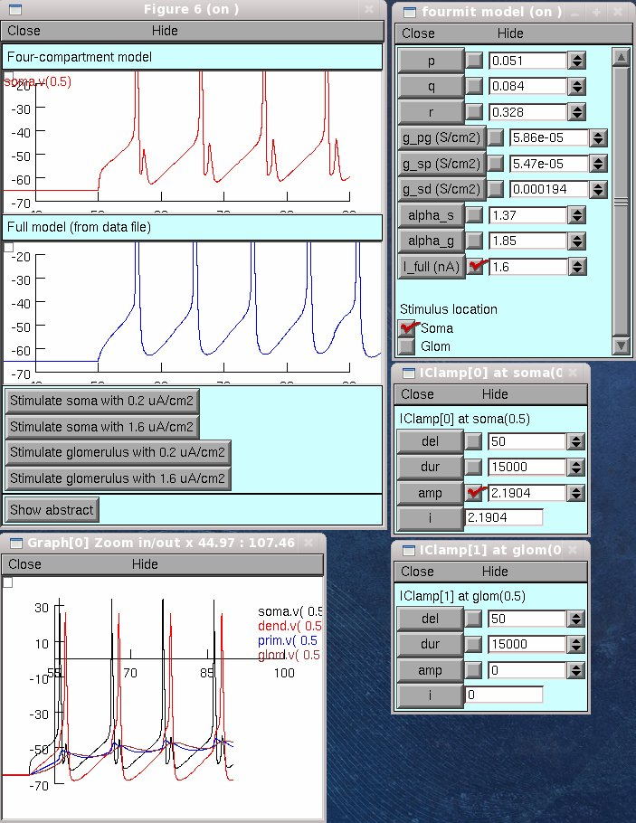

Mitral cell model with four compartments
(soma/axon, secondary dendrites, primary dendrite shaft, primary
dendrite tuft)
from: Davison AP, Feng J and Brown D. (2000) A reduced compartmental model of
the mitral cell for use in network models of the olfactory bulb.
Brain Research Bulletin 51(5): 393-399.
Run the model using the file mosinit.hoc after compiling the .mod files.
The graphs from fig. 6 in the paper can be reproduced by clicking the buttons
labelled "Stimulate soma with 0.2 uA/cm2" etc.:

A panel allows the parameters p, q, r, g_pg, g_sp, g_sd, alpha_s and alpha_g
to be varied.
Please note there are some typos in the paper:
(1) The current balance equation for Vd should be
Cm Vd' = -Ileak - INa - IKfast + (gsd/s)(Vs-Vd)
not
Cm Vd' = -Ileak - INa - IKfast - (gsd/s)(Vs-Vd)
(2) In Table 1, g_pg should be 4.08 x 10^-4, not 4.08 x 10^-3
For more information contact
andrew.davison@unic.cnrs-gif.fr